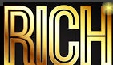
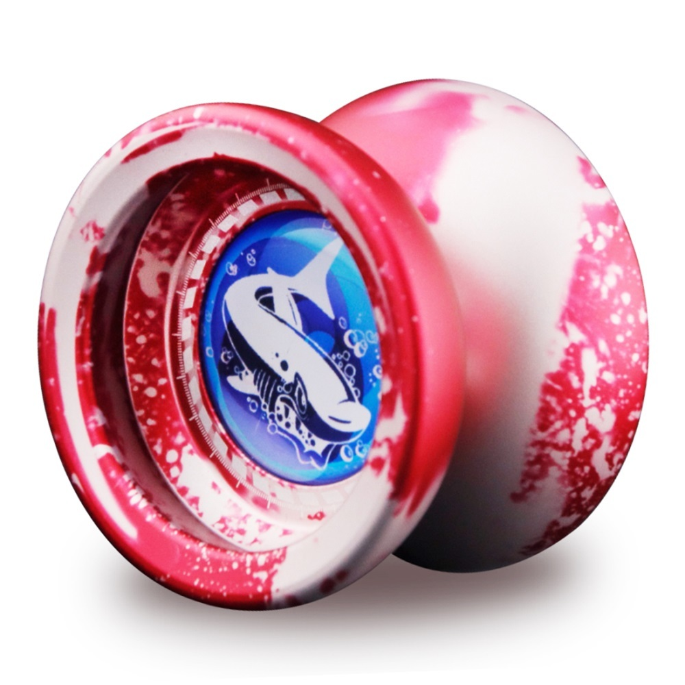
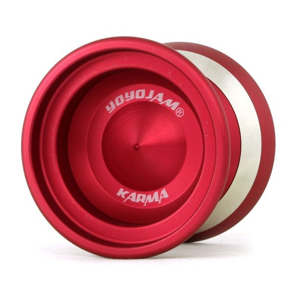
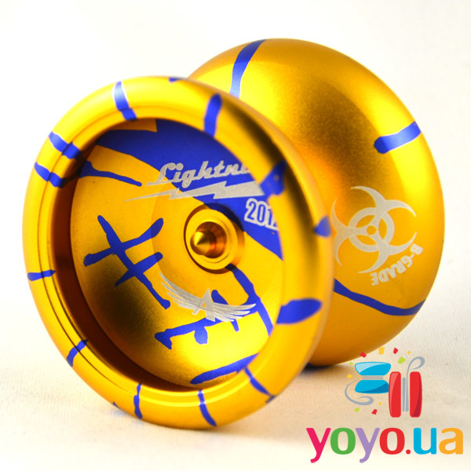

 
MAGICYOYO T9 NEW

392 ГРН
ОПИСАНИЕ:
- Сегодняшние современные йо йо не подхоят для начинающих игроков, из за того они не возвращиются в руку легким поддергиванием в верх, но только при выполнении трюка bind. Компания Magicyoyo нашла решение - как сделать профессиональные йо йо, доступными для начинающих йойеров.
- Предствляем вашему вниманию модель Magicyoyo T9 NEW. Уникальной особеностью даной модели является ее коплектация - вместо одного подшипника в комплект входит два - узкий и широкий. Если вы еще не освоили базовые трюки, тренируетесь на узком подшипнике который легко возвращается в руку, а когда научитесь легко меняете подшипник с помошью инструмента, который идет в комплеке.
YOYOJAM KARMA

4200 ГРН
ОПИСАНИЕ:
- Последний металический релиз от компании YoyoJam уже в Украине! Встречайте хай-энд - YoyoJam Karma.
- Это вторая модель после Phenom, в основе которой лежат специальные кольца утяжелители по бокам. Всем известен Phenom от Хироюки Судзуки, использующий такую же систему распределения веса, доказавший всему миру, что эти кольца придают игре плавность и точность.
- Карма использует все новейшие технологии в индустриии йо-йо, что позволяет добиться очень долгого слипа и приятной игры.
AERO-YO LIGHTNING (B-GRADE EDITION)

717 ГРН
ОПИСАНИЕ:
- LIGHTNING — металлическое йо-йо. Одно из самых востребованных профессиональных металлических йо-йо теперь экипируется в паре с подшипником EVO Steel, великолепно зарекомендовавшим себя среди игроков.
- Сплэш (splash) покраска делает AERO-YO Lightning 2012 еще более привлекательным и ярким.
- Отличия B-Grade от обычной версии: возможны заводские дефекты в покраске, поставляется в мешочке, а не в железной коробке.